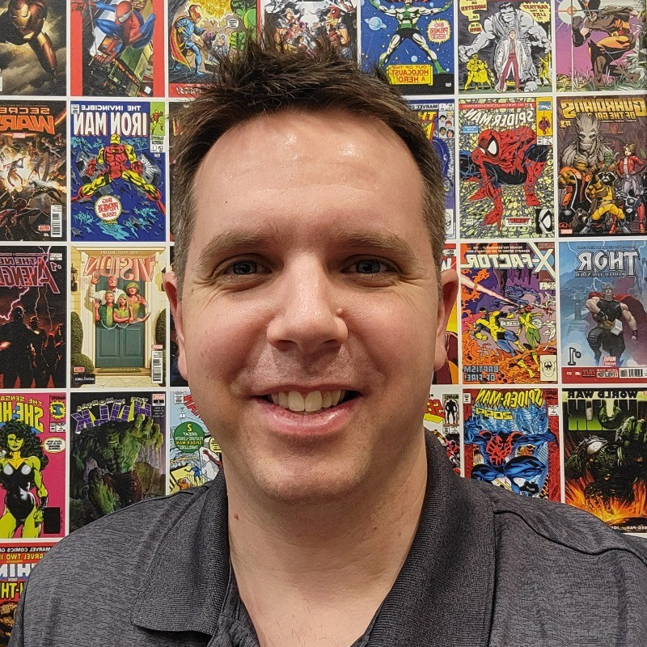

VP Capability, XR & Physical Computing at Endava
I had the pleasure of working with Joseph at Endava, and he is easily one of the strongest designers I’ve worked with.
Joseph combines excellent design craft with real strategic thinking. He is great at shaping conversations with clients, preparing and running workshops, and helping teams build confidence around the direction of a product or experience. He communicates clearly, asks thoughtful questions, and has a real ability to challenge assumptions in a way that moves the work forward.
One of the things I most appreciated about working with Joseph was his curiosity and initiative. He is always looking ahead, exploring new tools and better ways of working, particularly around AI. A great example was when he independently embedded a working AI agent into a Figma prototype for one client simply because he saw the opportunity and made it happen.
Joseph brings a rare mix of design skill, strategic thinking, curiosity, and ownership. I would highly recommend him to any team looking for a thoughtful, forward-looking designer who can make a real impact.